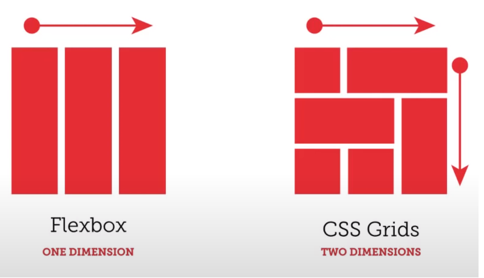
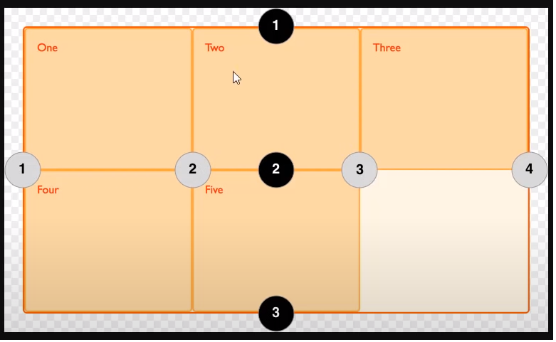

Intro to CSS Grid
- All Browsers support this layout as of March 2017.
- FlexBox and CSS Grid are used for webpage layouts, including float property. However float is a property and not an actual system for web page fluid layout.
- The most current system is CSS Grid. float property was meant to float text around images and not meant for page layout, Flex was created to address this issue. However it also had some limitations.
- CSS Grid is a 2Dimensional layouts which includes columns AND rows. Flexbox is either column or row (One Dimensional layout)
- Bootstrap is a Twitter framework which uses and implements the Grid concept
Responsive Web Design
- Web display changes depending on the device size
- Use @media queries to define the size
- min-width property - mobile first design
- max-width property - desktop first design
- ~phone 500px
- ~table 760 px
- ~desktop 960px
- Media queries used in CSS, follows the cascading rule
Flex Layout
- 1-dimensional layout, either row or column.
- Has shortcomings, hence the Grid layout
Box4 - Float vs Flex vs Grid
- Float was created to float text around images.
- Like tables it gets 'misused' in web layout.
FlexBox Sample

